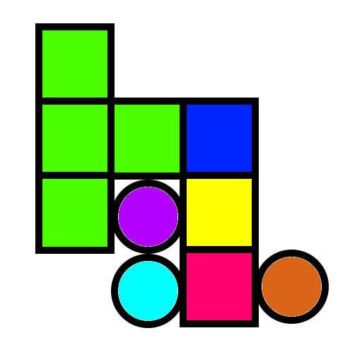

|  | Brick games |
"Color balls" game |
The idea was borrowed from old computer game, which worked under DOS.
Figures in the form of bars, which consist of the three color circles arranged vertically fall from above into a rectangular glass 10 and width 20 cells in height. (1) .
In flight, the player can change the arrangement of colored circles in the column and move it horizontally.
You can also "drop" figure, that is, to accelerate its decline, when decided, where the figure should fall.
Figurine flies up until it hits on another round or bottom of the glass, after which the column is divided into separate circles. Each circle is "rolled" down to the left or to the right down, if these cells are free.
Після падіння, усі кола, що межують з колами такого ж колору по вертикалі, горизонталі та діагоналі знищуються. Всі кола, що вище знищених, опускається на одну клітку.
The game ends when a new figure can not fit into the glass.
A player gets points for every destroyed the circle, so its task - to add color to the color circles do not fill the glass (vertical) as long as possible, so as to get as many points as possible.